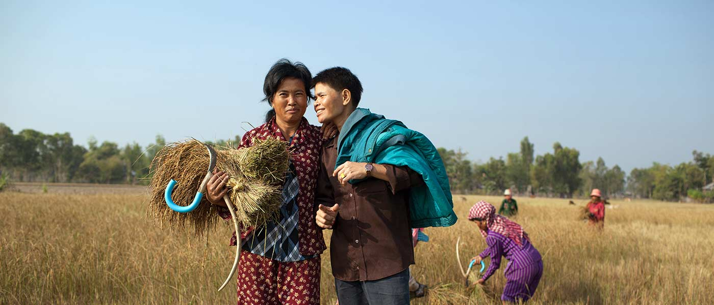
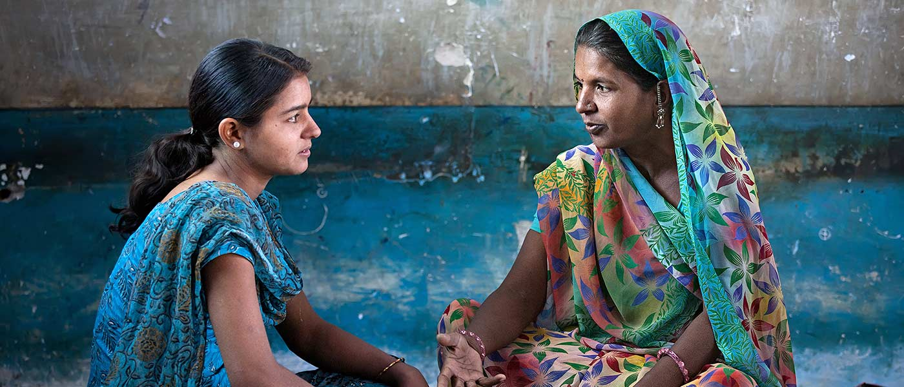

Mother and child, Nicaragua. Photograph by Evan Abramson
Advancing the Health and Rights of
Women, Girls and LGBT People
2013: $9.65 million | 144 grantees effecting change
AJWS grantee SANGRAM organizes a protest as part of the largest public outcry against rape in India’s history. Photograph courtesy of SANGRAM
Rising Up to Stop Rape and Violence
For decades, AJWS’s grantees around the world have worked to stop violence against women.
In late 2012 the brutal rape and murder of a student on a public bus in Delhi, India, set off a global outcry that called attention to the magnitude of this problem.
As people flooded India’s streets in protest, AJWS’s grantees spent early 2013 working to harness the public’s desire to bring about policy change. Groups like Awaaz-e-Niswaan and Shaheen organized demonstrations, night vigils, and educational programs. Vanangana, SANGRAM and Association for Advocacy and Legal Initiatives intensified their advocacy to strengthen India’s weak anti-rape laws—something they had been pursuing for many years.
In March 2013, their efforts helped bring about the passage of a new law that prohibits sexual harassment, stalking and other related offenses and broadens the legal definition of “rape” to include violent sexual assault. These advances are an important step toward justice for women throughout the country.
With AJWS’s support, grassroots groups in India teach girls about their rights and seek to end the practice of child marriage. Photograph by Mark Tuschman
Empowering Girls to Determine Their Own Futures
In July 2013 AJWS received a three-year $15.3 million grant from The Kendeda Fund to expand our efforts to end child marriage in India by supporting groups that empower girls.
In 2013 we funded 14 organizations working on this issue in India, and we will deepen and intensify our investment in the coming years. In 2013 and early 2014, Nirantar, an AJWS grantee, conducted an intensive in-country study of the root causes of child marriage and identified gaps in current interventions to address it. We will use the findings of this study to support innovative, local solutions that will empower girls to make their own choices about their futures.
Pen Nol and Chhon Nhoeng are a lesbian and transgender couple living in rural Cambodia. AJWS grantee Rainbow Community Kampuchea works in this community to foster respect for the rights of LGBT people. Photograph by Evan Abramson
Securing Saftey and Health for the LGBT Community
In Honduras, violence against women and lesbian, gay, bisexual and transgender (LGBT) people is at a record high. Unfortunately, most cases go unpunished.
After years of advocacy on this issue, AJWS grantee Lesbian Network Cattrachas celebrated a victory when the Honduran government reformed its penal code to crack down on these crimes. For the first time, the law now recognizes murders motivated by hatred of women as “femicide” and violence motivated by intolerance of LGBT people as “hate crimes.”
In Nicaragua, lesbian, bisexual and transgender (LBT) women are often harassed and discriminated against when they visit hospitals and health clinics.
But the situation improved dramatically in 2013 when Grupo Safo, an LGBT rights organization supported by AJWS, persuaded the Department of Health to open the first health clinic for LBT women in Central America. Nicaraguan LBT women now have a safe place to receive quality health care without fear.
Women, India. Photograph by Mark Tuschman
Campaigning for Human Rights
We Believe: Standing with Women, Girls and LGBT People Worldwide
In December 2013, AJWS launched We Believe, a national action campaign calling on the U.S. government to help end violence against women and girls; stop hate crimes against LGBT people; and empower girls to end child marriage.
Congresswoman Jan Schakowsky, champion of the International Violence Against Women Act, joined AJWS to launch our We Believe campaign in December 2013. Photograph by Mike Kandel
We are advocating for passage of the International Violence Against Women Act (IVAWA), mobilizing thousands of supporters to sign petitions, speak out through social media and lobby their Members of Congress to pass this lifesaving legislation.
We have powerful allies: at a launch event on Capitol Hill in late 2013, 10 Members of Congress stood alongside AJWS to voice their support, including Rep. Jan Schakowsky (D-IL), sponsor of the International Violence Against Women Act.
In 2014 and beyond, our supporters will raise their voices to insist that our government does all it can to ensure that women, girls and LGBT people can live without fear and have the freedom to determine their own futures.
“I am proud that advocating for passage of IVAWA is part of AJWS’s We Believe campaign. It is a campaign that allows us to combine our beliefs and our actions. And it is committed to the spirit of freedom and justice. Through the work of AJWS and our individual efforts, we will be able to achieve a world where women can succeed.” CONGRESSWOMAN JAN SCHAKOWSKY